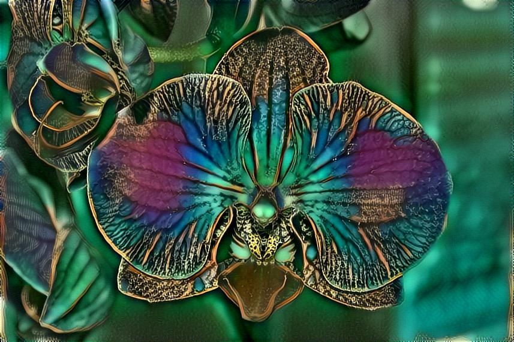
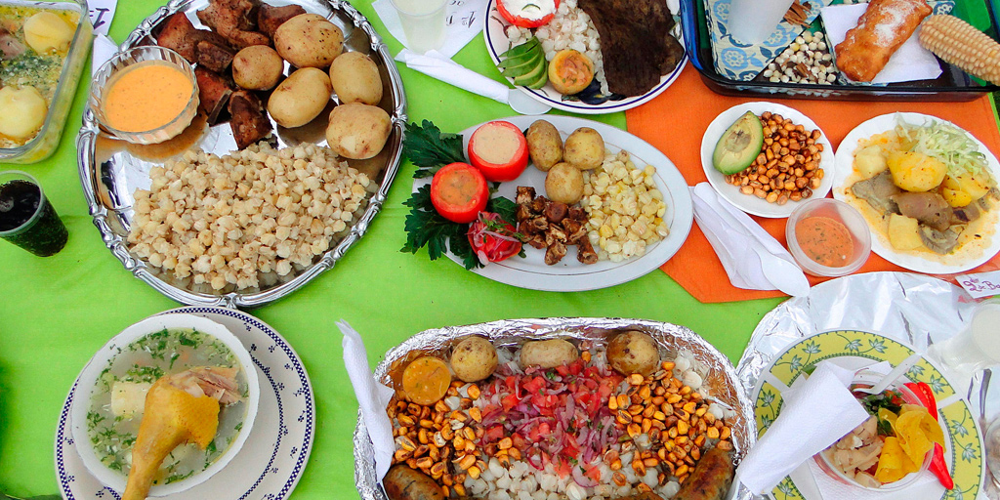

The Inheritance of Orquídea Divina
June 28, 2021
Orquídea Divina Montoya is the Matriarch of the Montoyas, and she summons her family to her magical home in Four Rivers for their inheritance when she can feel herself dying. Instead, she transforms and leaves her entire family with more questions than answers, as they are used to. However, when years later, someone is killing off their family, Marimar, Rey, Tatinelly, and Rhiannon travel to Ecuador to try to determine the truth behind the inheritance they had received.
I loved the way this story alternated between Orquídea's past and the present from Marimar, Rey, and Tatinelly's perspectives. There are things that every family does not talk about, and this was explored within the Montoyas both from Orquídea's experience growing up and from the viewpoint of her descendants, who are understandably frustrated with all that Orquídea refused to talk about. I also liked the commentary about how you choose your family, even within your blood family.
I loved this look at connecting to your family's roots - both in the family gathering at Four Rivers (all!! that!! food!!) and in the journey to Ecuador in search of answers to Orquídea's past.
And the magic!! I loved this aspect of magical realism where even the family members that had magic were a bit skeptical that they had it for the majority of the book, except for Rhiannon, who was a younger kid and still believes in magic. I also loved the commentary on using magic to create "something from nothing" and the sorts of prices you'd have to pay in order to accomplish such a thing. The origins of Orquídea deciding to take on magic and then use that magic to change her luck and put down roots before passing it on to her descendants were beautifully done.
I do wish that there was more of Orquídea's pre-Four Rivers life was showcased in the book - given the circumstances of Orquídea's life that we did learn about, it felt weird that the only part of that followed Orquídea was up until she left her first husband, especially since the book also brought us moments from when Orquídea first settled in Four Rivers. It felt like there definitely should have been events that happened in between the final event we see of Orquídea's life pre-Four Rivers and that first moment in Four Rivers that had ramifications towards Orquídea's lineage, at the very least.
Thank you to Atria Books and NetGalley for the ARC.

More about The Inheritance of Orquídea Divina here:

Title: The Inheritance of Orquídea Divina
Author:Zoraida Córdova
The Montoyas are used to a life without explanations. They know better than to ask why the pantry never seems to run low or empty, or why their matriarch won’t ever leave their home in Four Rivers—even for graduations, weddings, or baptisms. But when Orquídea Divina invites them to her funeral and to collect their inheritance, they hope to learn the secrets that she has held onto so tightly their whole lives. Instead, Orquídea is transformed, leaving them with more questions than answers.
Seven years later, her gifts have manifested in different ways for Marimar, Rey, and Tatinelly’s daughter, Rhiannon, granting them unexpected blessings. But soon, a hidden figure begins to tear through their family tree, picking them off one by one as it seeks to destroy Orquídea’s line. Determined to save what’s left of their family and uncover the truth behind their inheritance, the four descendants travel to Ecuador—to the place where Orquídea buried her secrets and broken promises and never looked backed.
Alternating between Orquídea’s past and her descendants’ present, The Inheritance of Orquídea Divina is an enchanting novel about what we knowingly and unknowingly inherit from our ancestors, the ties that bind, and reclaiming your power.